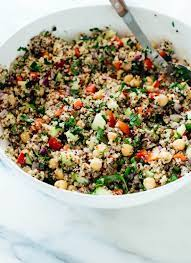

Quinoa Salad

Here is my world famous quinoa salad recipe! Refreshing, light, and healthy, it's quick and easy to make, and is a perfect dish to make for a barbeque. It can be enjoyed cold or at room temperature.
Ingredients:
Salad Ingredients
- 1 cup uncooked quinoa
- 1 tsp of better than boulion vegetable flavour
- 1/2 tbsp. cumin
- 1/2 tbsp. tumeric
- 1 tbsp. paprika
- 1 cucumber cubed
- 1 tomato cubed
- 1 bell pepper (red, yellow, or green) cubed
- 1 red onion minced
- Fresh cilantro (optional and to taste)
- Fetta cheese (optional and to taste)
Dressing Ingredients
- 1/2 cup olive oil
- 1/2 cup of lemon juice
- 1 clove of minced garic
- 1 tbsp honey
- 2 bunches of lemon thym minced
- Salt and pepper to taste
Steps:
- Rinse your quinoa with cool water.
- Add your rinsed quinoa to a large saucepan and add two cups of cool water, along with your better than boulion and spices. Bring to a boil.
- Once the quinoa is boiling, lower the temperature to medium heat and cover with a lid. Let simmer for 15-20 minutes, or until the quinoa has opened up and is tender.
- While the quinoa is boiling, cut your vegeetables and add them to a large bowl.
- Finely chop your fresh herbs and add them to the bowl.
- Add all of the dressing ingredients to a pourable container and mix thoroughly. Keep to the side.
- Once the quinoa is cooked and the water has been absorbed, fluff with a fork and allow it to cool in the pot for roughly 10 minuets. *If there's still water left but your quinoa is cooked, simmer carefully with the lid off while continuously stirring so that the liquid can evaporate and the quinoa won't burn.
- Once the quinoa has cooled, add it to the bowl with your vegetables and herbs.
- Add enough dressing for your taste and mix thoroughly.
- Grab a fork, and enjoy!